自己紹介
自己紹介
はじめまして. 名古屋大学情報学研究科知能システム系森・小田研究室M1の加藤です. 2003年に中国の延吉市で生まれ, 2013年からは清流の国・岐阜で育ちました. 趣味は自然と触れ合うことで, 今でも帰省する度に金華山に上っています. 生い茂る緑, 苔むす大岩, すれ違う人の温かな挨拶. 私は岐阜が大好きです.
座右の銘
「学問に終わりはない」―― 唐代の文人, 韓愈の言葉です.
私の学生時代は変革の連続であったように思います. コロナ禍は未だに記憶に新しく, 生成AIの普及, そして緊迫する国際情勢. こうした激動の4年間において、私は大学での研究, 学生委員会,
アルバイトなど, あらゆる場を学びの舞台と捉え, 学びを恐れず, 学びを諦めず, 学びに食らいつくように過ごしてきました.
私にとって「学ぶ」とは, 変化し続ける社会に対し, 自らを最適化させていくプロセスに他なりません. これからも予測困難な時代が続くでしょう. しかし, 私は学びを通じて自らを柔軟にアップデートし続け, いかなる環境にも適応し, 貢献できる人材でありたいと考えています.
趣味
散歩, 旅行, 写真撮影
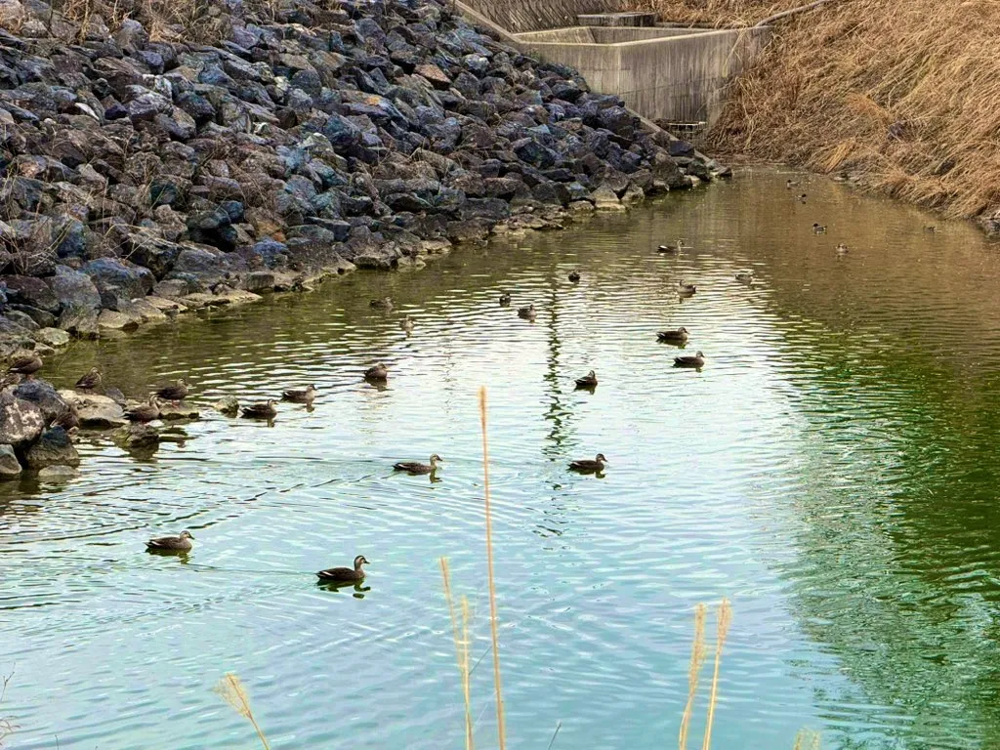
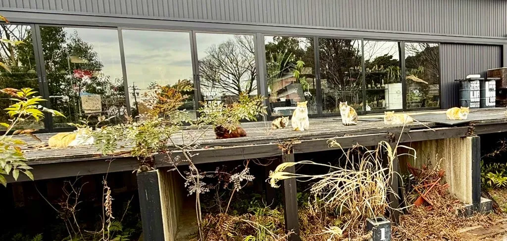
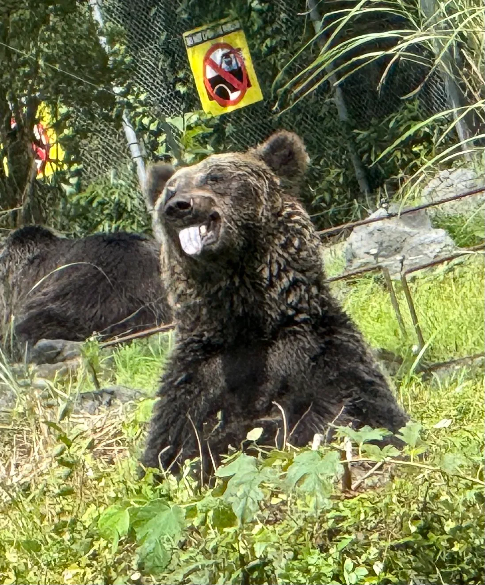
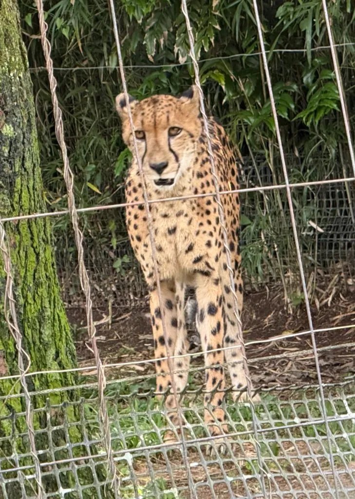
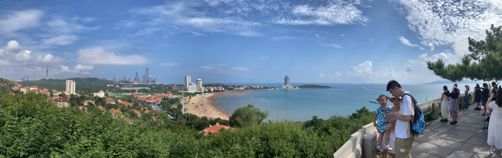
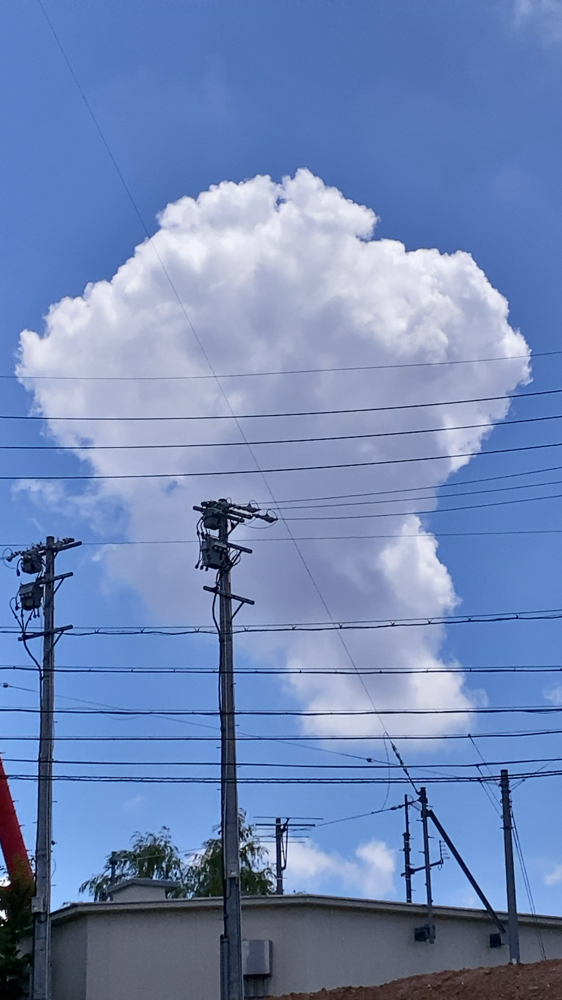

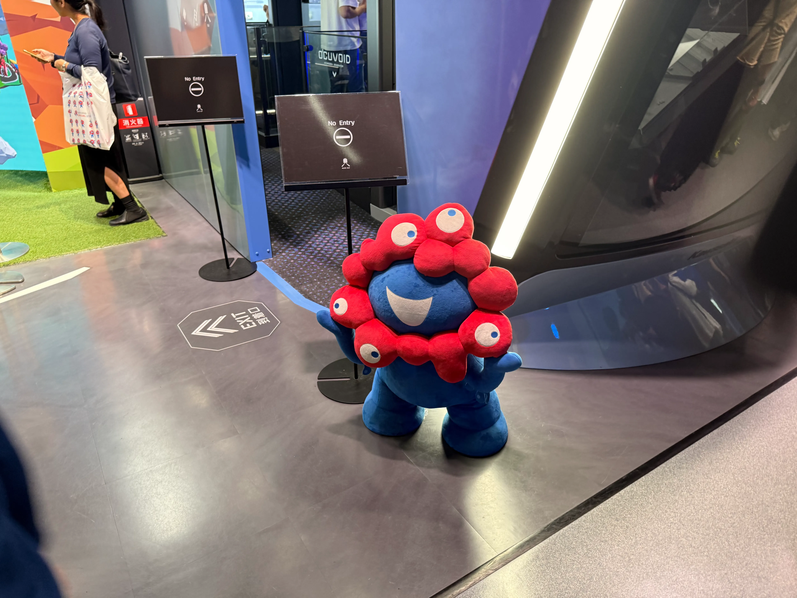
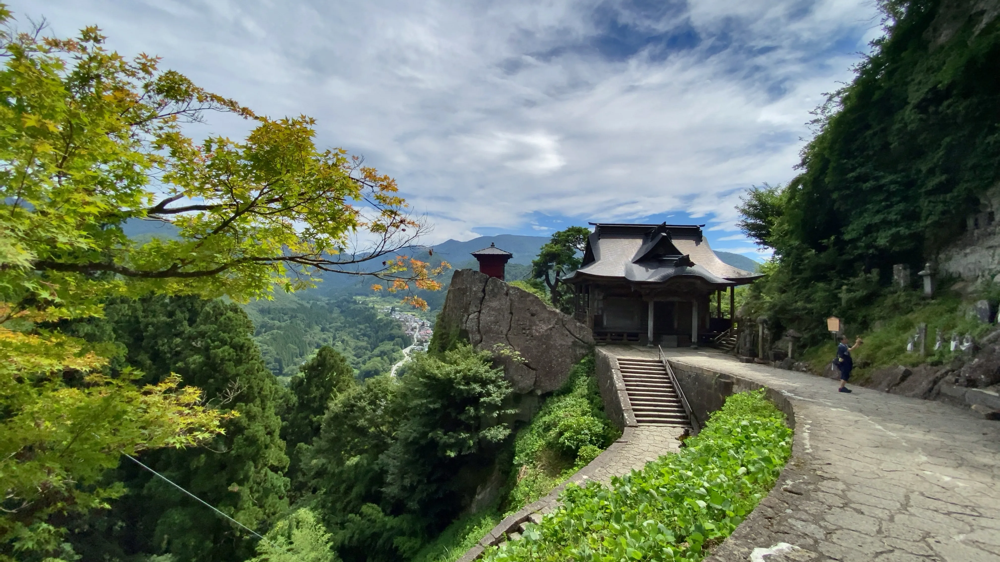
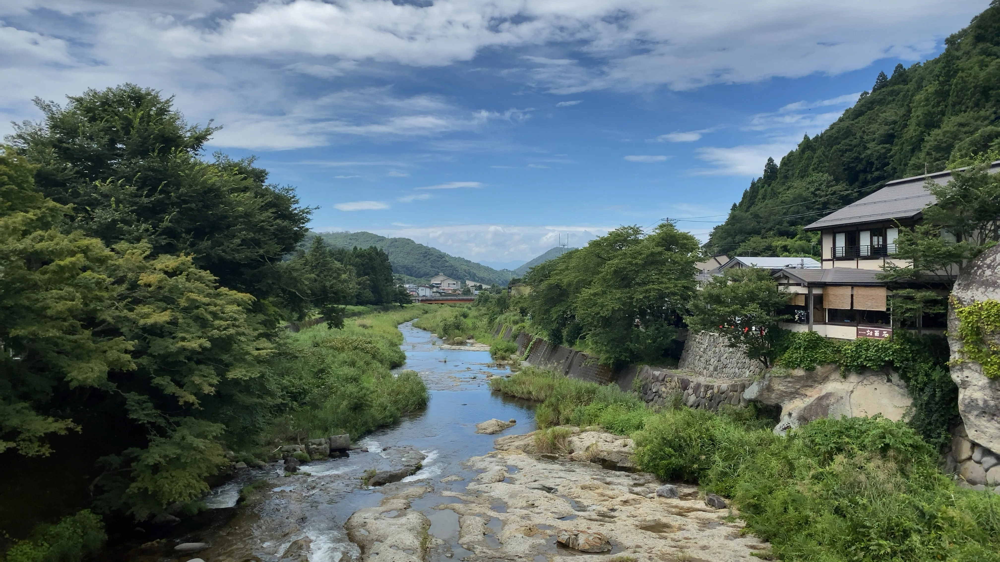
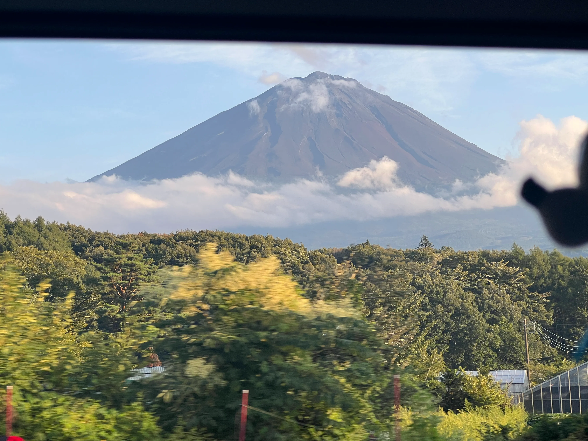
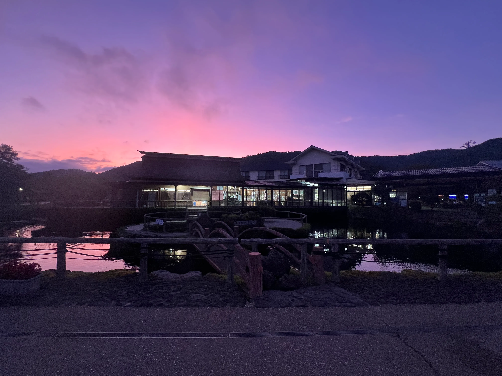
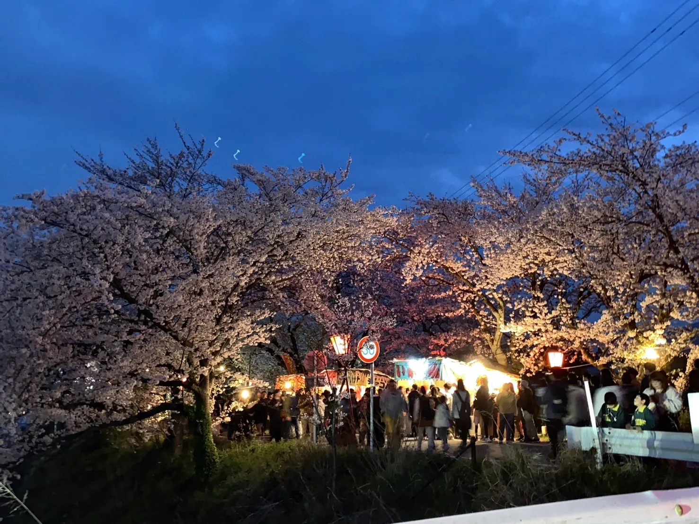